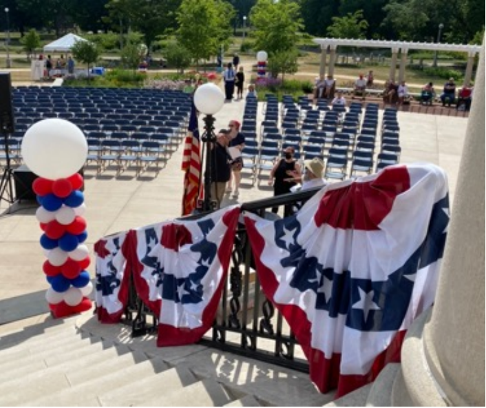
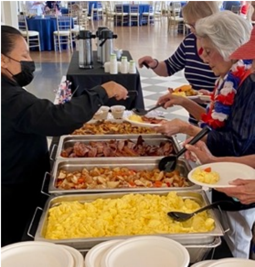
Members of the museum’s Board of Trustees, the Guild (an educational and fundraising support group), and other donors enjoyed a buffet in the Morse Genius Chicago Room, the handsome event space overlooking the park. Seats by the glass doors to the patio enabled those needing air conditioning to remain indoors for the program.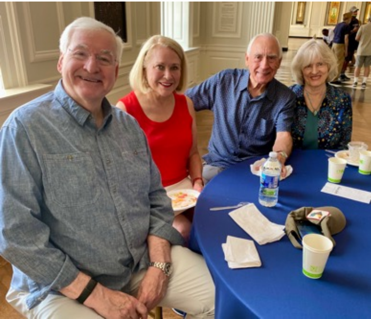
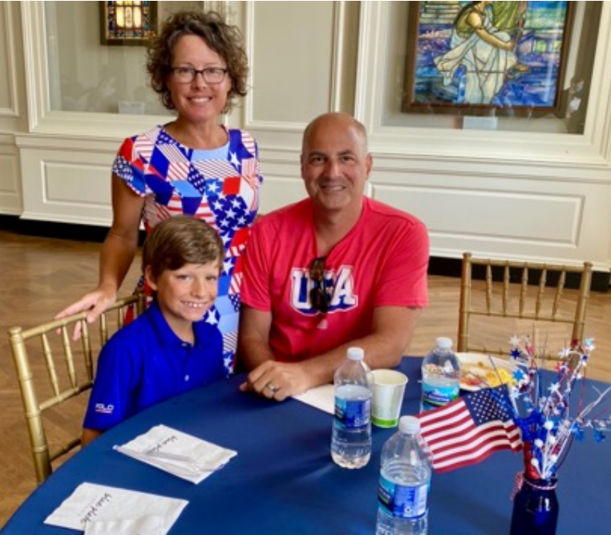
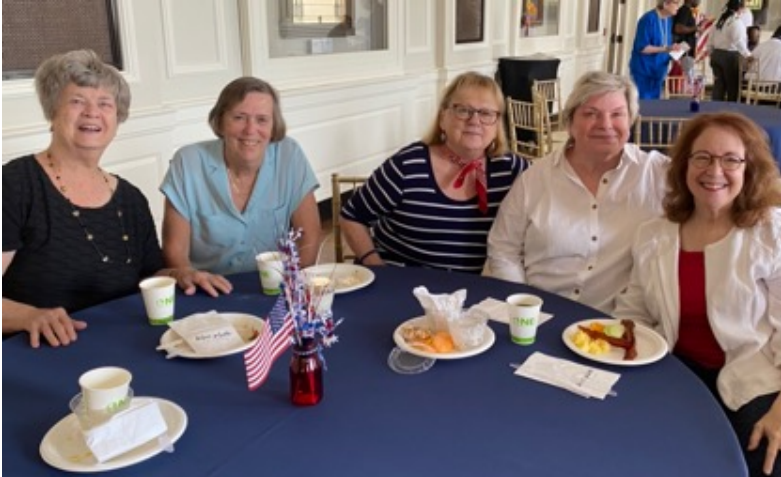
Meanwhile, museum fans began to arrive for the anticipated patriotic program on the plaza. The temperature, however, was over 86 degrees, and most of the outdoor seats were in the sun. Dozens of guests chose to sit under surrounding pergolas or trees in the shade. For those braving the sun, umbrellas, hats, and particularly straw hats were in evidence.
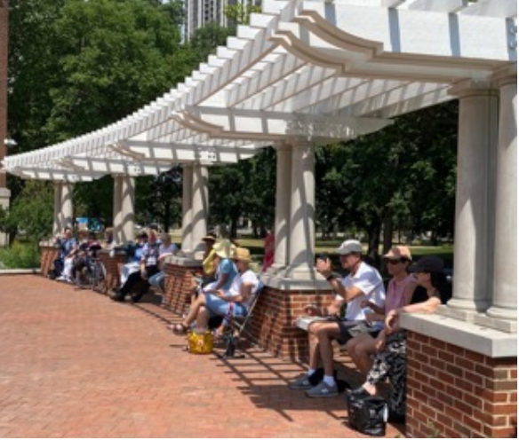 |
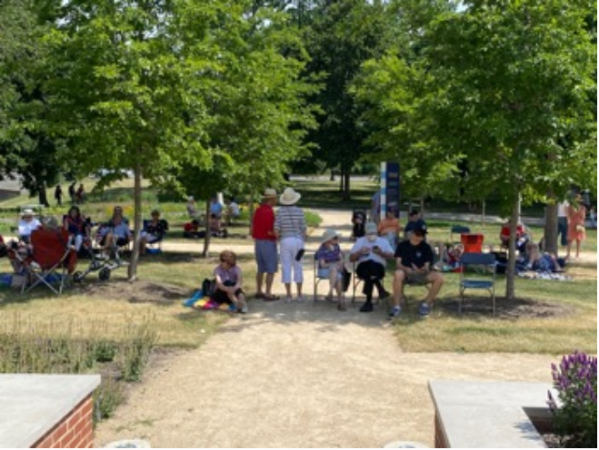 |
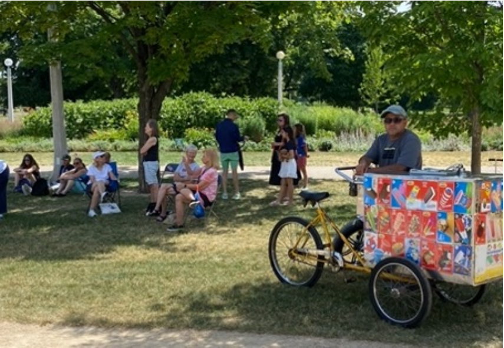
The sartorial stars of the day were the stars and stripes themselves, or at least a red, white, and blue color scheme displayed in many shapes and sizes.
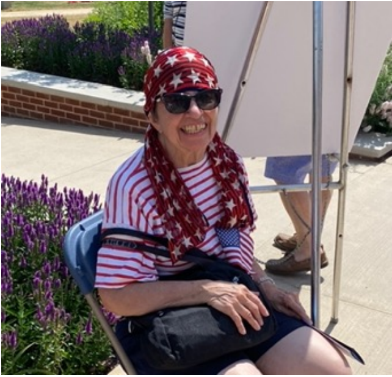 |
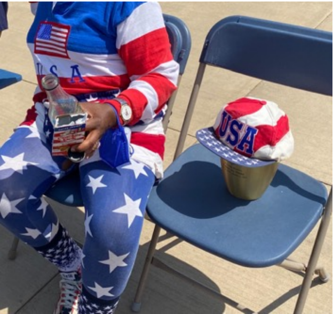 |
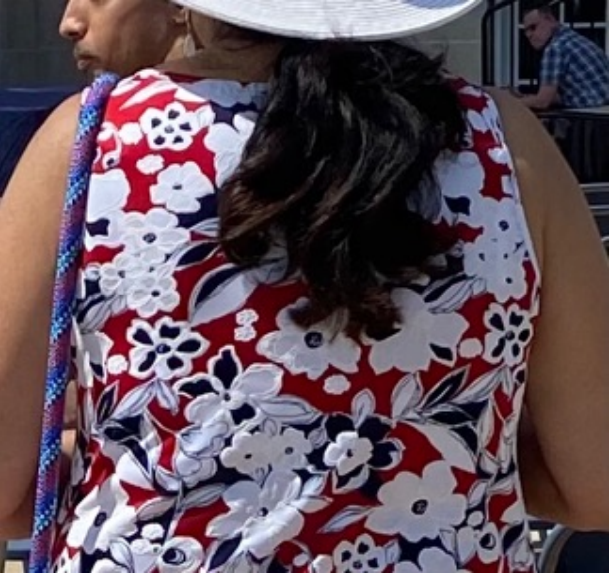 |
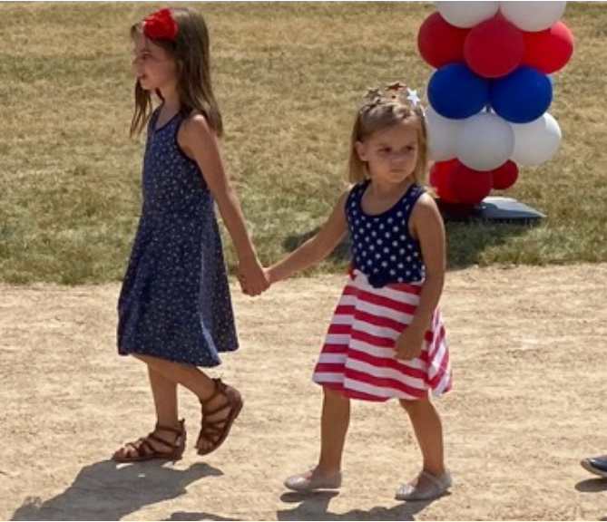 |
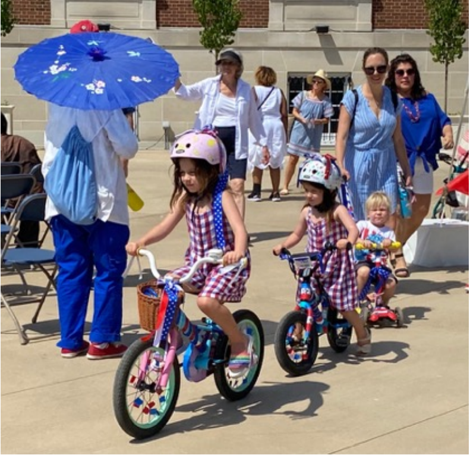
Board of Trustees Chair Dan Jaffe welcomed guests to the program, invoking his parents, Richard and Shirley Jaffe, in whose honor the new Jaffe History Trail around the museum was named. He also acknowledged that the museum sits on Native American land. Such inclusion was the theme of the program. Museum President and CEO Donald Lassere, presiding over his first Chicago History Museum 4th of July, noted the sign language interpreter and reserved seats for the deaf or hard of hearing. He pointed out that Independence Day means many different things to different people, referencing the continued fight for freedom that so many groups pursue today.
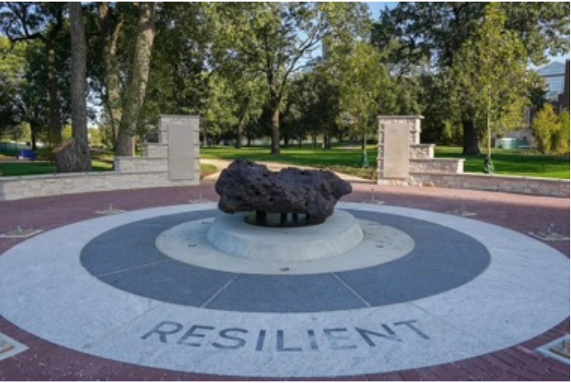 Melted relic from the 1871 Chicago fire on the Jaffee History Trail |
Chair of the Board of Trustees Dan Jaffe |
Following the patriotic traditions of the event, Lassere introduced the color guard and then invited the audience to stand for Sarah Jenkins’ beautiful rendition of the “Star Spangled Banner,” echoed silently by the sign language interpreter behind her.
The event’s keynote speaker expanded on the inclusion theme. Author, professor, public historian, and champion of racial and gender equity Michelle Duster is the great-granddaughter of journalist and activist Ida B. Wells. Her theme was patriotism, defined as “pushing your country to live up to its full potential.” She noted, “Some people consider those who challenge the status quo to be troublemakers or label them as unpatriotic. My greatgrandmother was labeled a ‘dangerous negro agitator’ by the FBI and ‘a nasty-minded mulatress’ by others who found her outspokenness to be troublesome. But pushing your country to live up to its full potential is one of the most patriotic things a citizen can do.” She closed by highlighting such trailblazing African American women from Chicago as poet Gwendolyn Brooks, playwright Lorraine Hansberry, and labor organizer Addie Wyatt, patriots in their significant impact on our country.
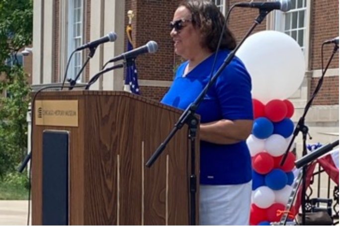
Duster’s inspiring speech offered her audience the important message that declaring independence is not synonymous with achieving independence. In thanking Duster, Lassere asked the audience to look for ways for us all to find common ground to achieve our shared dream expressed in the Declaration of Independence. Sarah Jenkins returned to sing “America the Beautiful.” Laserre concluded the speaking portion of the day by inviting everyone to explore the museum and stay around for an afternoon of blues music.
The Chicago History Museum’s tagline, “Telling Chicago Stories,” embodies the message of inclusion through its declared values: discovery, creativity, empathy, authenticity, integrity, service, and collaboration. This museum rejects the image of a museum locked in the past. Through its exhibitions, publications, and community outreach it urges us to pursue a better future by offering a broad and deep understanding of the past.
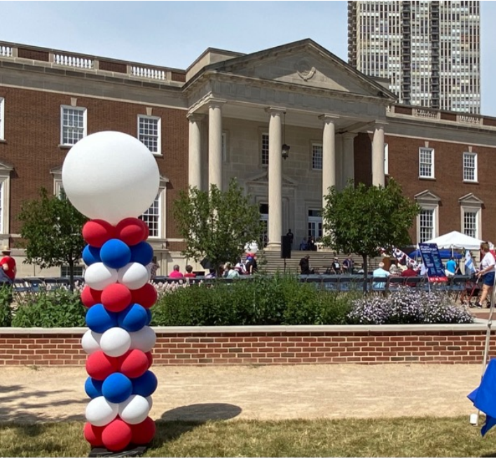